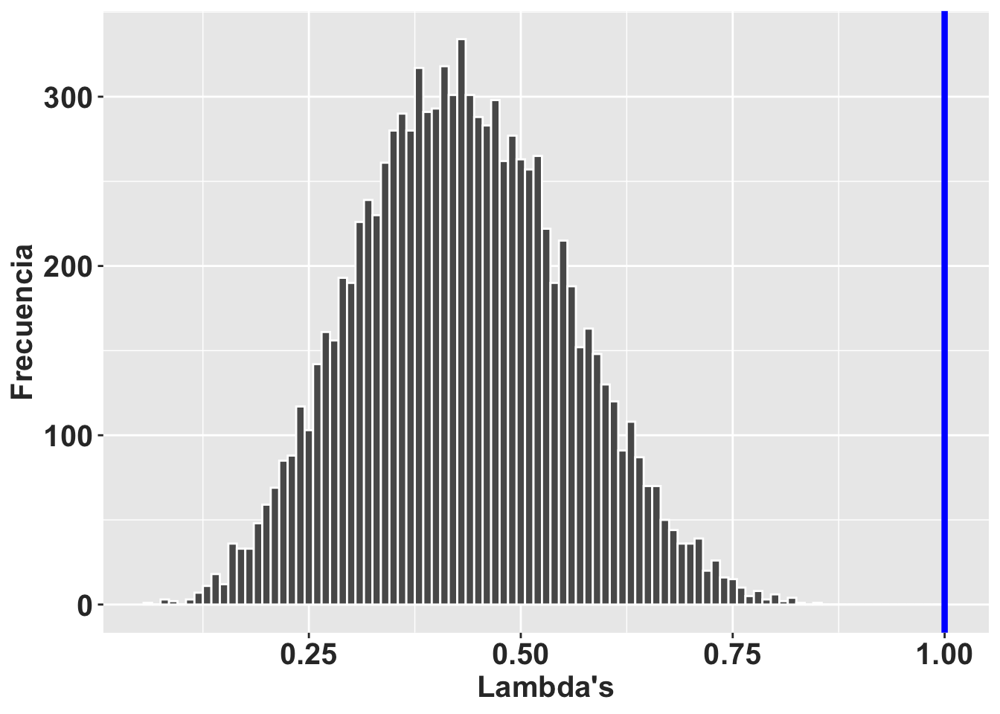

library(popbio)
library(popdemo)
library(raretrans)
library(tidyverse)## ── Attaching core tidyverse packages ────────────
## ✔ dplyr 1.1.4 ✔ readr 2.1.5
## ✔ forcats 1.0.0 ✔ stringr 1.5.1
## ✔ ggplot2 3.5.1 ✔ tibble 3.2.1
## ✔ lubridate 1.9.3 ✔ tidyr 1.3.1
## ✔ purrr 1.0.2
## ── Conflicts ─────────── tidyverse_conflicts() ──
## ✖ dplyr::filter() masks stats::filter()
## ✖ dplyr::lag() masks stats::lag()
## ℹ Use the conflicted package (<http://conflicted.r-lib.org/>) to force all conflicts to become errorslibrary(Rage)
matU1=matrix(c(
0.43, 0, 0, 0.00,
0.38, 0.84, 0, 0,
0, 0, 0.51, 0.15,
0, 0.14, 0.43, 0.84
), byrow=4, ncol=4)
matU1## [,1] [,2] [,3] [,4]
## [1,] 0.43 0.00 0.00 0.00
## [2,] 0.38 0.84 0.00 0.00
## [3,] 0.00 0.00 0.51 0.15
## [4,] 0.00 0.14 0.43 0.84matF1=matrix(c(
0, 0, 0, 0.14,
0, 0, 0, 0,
0, 0, 0, 0,
0, 0, 0, 0
), byrow=4, ncol=4)
matF1## [,1] [,2] [,3] [,4]
## [1,] 0 0 0 0.14
## [2,] 0 0 0 0.00
## [3,] 0 0 0 0.00
## [4,] 0 0 0 0.00TF1=matU1+matF1
TF1## [,1] [,2] [,3] [,4]
## [1,] 0.43 0.00 0.00 0.14
## [2,] 0.38 0.84 0.00 0.00
## [3,] 0.00 0.00 0.51 0.15
## [4,] 0.00 0.14 0.43 0.84lambda(TF1)## [1] 1.029629TF_rub=list(Tmat = matU1, Fmat = matF1)RLT_Tprior <- matrix(c(0.25, 0.025, 0.0, 0.05, 0.9, 0.025, 0.01, 0.025, 0.95, 0.69, 0.05, 0.025), byrow = TRUE, nrow = 4, ncol = 3)
priorTF_rub=matrix(c(
0.43, 0, 0, 0.00,
0.38, 0.84, 0, 0,
0, 0, 0.51, 0.15,
0, 0.14, 0.43, 0.84,
0.19, 0.02, 0.06, 0.01
), byrow=5, ncol=4)
priorTF_rub## [,1] [,2] [,3] [,4]
## [1,] 0.43 0.00 0.00 0.00
## [2,] 0.38 0.84 0.00 0.00
## [3,] 0.00 0.00 0.51 0.15
## [4,] 0.00 0.14 0.43 0.84
## [5,] 0.19 0.02 0.06 0.01N=c(10,10, 15, 20)alpha <- matrix(c(NA_real_, NA_real_, NA_real_,1e-5,
NA_real_, NA_real_, NA_real_,NA_real_,
NA_real_, NA_real_, NA_real_,NA_real_,
NA_real_, NA_real_, NA_real_,NA_real_), nrow=4, ncol = 4, byrow = TRUE)
beta <- matrix(c(NA_real_, NA_real_, NA_real_, 1e-5,
NA_real_, NA_real_, NA_real_,NA_real_,
NA_real_, NA_real_, NA_real_,NA_real_,
NA_real_, NA_real_, NA_real_,NA_real_), nrow=4, ncol = 4, byrow = TRUE)sim_transitions(
TF_rub,
N,
P = priorTF_rub,
alpha = alpha,
beta = beta,
priorweight = -1,
samples = 1
)## [[1]]
## [,1] [,2] [,3] [,4]
## [1,] 0.4706814 0.00000000 0.0000000 0.1763413
## [2,] 0.1520922 0.90061153 0.0000000 0.0000000
## [3,] 0.0000000 0.00000000 0.4244558 0.1485019
## [4,] 0.0000000 0.09880196 0.4540504 0.8392313sim_transitions(TF_rub, N, P = priorTF_rub, alpha = alpha, beta = beta,
priorweight = 0.1)## [[1]]
## [,1] [,2] [,3] [,4]
## [1,] 0.3406676 0.00000000 0.0000000 0.1048806
## [2,] 0.3441325 0.90214948 0.0000000 0.0000000
## [3,] 0.0000000 0.00000000 0.5410720 0.1132391
## [4,] 0.0000000 0.09782624 0.4562164 0.8852413Lep_rub_0.5 <- sim_transitions(TF_rub, N, P = priorTF_rub, alpha = alpha, beta = beta,
priorweight = 0.5, samples = 10000)
head(Lep_rub_0.5)## [[1]]
## [,1] [,2] [,3] [,4]
## [1,] 0.4833481 0.0000000 0.0000000 0.5187199
## [2,] 0.4033351 0.8659815 0.0000000 0.0000000
## [3,] 0.0000000 0.0000000 0.6457480 0.2250992
## [4,] 0.0000000 0.1210300 0.3297684 0.7706961
##
## [[2]]
## [,1] [,2] [,3] [,4]
## [1,] 0.3471708 0.0000000 0.0000000 0.1987837
## [2,] 0.2794829 0.8478821 0.0000000 0.0000000
## [3,] 0.0000000 0.0000000 0.5632398 0.1500172
## [4,] 0.0000000 0.1519936 0.3496785 0.8497881
##
## [[3]]
## [,1] [,2] [,3] [,4]
## [1,] 0.3741339 0.00000000 0.0000000 0.26062275
## [2,] 0.4980268 0.95576985 0.0000000 0.00000000
## [3,] 0.0000000 0.00000000 0.1842216 0.08289114
## [4,] 0.0000000 0.04339703 0.5654973 0.91707600
##
## [[4]]
## [,1] [,2] [,3] [,4]
## [1,] 0.5075509 0.0000000 0.0000000 0.05424193
## [2,] 0.3814937 0.7647862 0.0000000 0.00000000
## [3,] 0.0000000 0.0000000 0.5503943 0.14484560
## [4,] 0.0000000 0.2265723 0.3881647 0.84960949
##
## [[5]]
## [,1] [,2] [,3] [,4]
## [1,] 0.5273601 0.0000000 0.0000000 0.32358842
## [2,] 0.3988412 0.8078476 0.0000000 0.00000000
## [3,] 0.0000000 0.0000000 0.4602856 0.04242003
## [4,] 0.0000000 0.1673073 0.5012194 0.92957517
##
## [[6]]
## [,1] [,2] [,3] [,4]
## [1,] 0.5654356 0.0000000 0.0000000 0.1671938
## [2,] 0.3308377 0.8499026 0.0000000 0.0000000
## [3,] 0.0000000 0.0000000 0.4277601 0.2355787
## [4,] 0.0000000 0.1081319 0.5701668 0.7631951rlt_theme <- theme(axis.title.y = element_text(colour="grey20",size=15,face="bold"),
axis.text.x = element_text(colour="grey20",size=15, face="bold"),
axis.text.y = element_text(colour="grey20",size=15,face="bold"),
axis.title.x = element_text(colour="grey20",size=15,face="bold"))RLT_0.5 <- tibble(lposterior = map_dbl(Lep_rub_0.5, lambda)) # convertir la lista en un tibble
ggplot(data = RLT_0.5,
mapping = aes(x = lposterior)) +
geom_histogram(binwidth = 0.01, colour="white") +
rlt_theme+ geom_vline(xintercept = 1,
color = "blue", size=1.5)+
xlab("Lambda's")+
ylab("Frecuencia")## Warning: Using `size` aesthetic for lines was deprecated
## in ggplot2 3.4.0.
## ℹ Please use `linewidth` instead.
## This warning is displayed once every 8 hours.
## Call `lifecycle::last_lifecycle_warnings()` to
## see where this warning was generated.
ggsave("Figures/Posterior_Lep_rub_3.png")## Saving 7 x 5 in imageRLT_0.5_summary <- summarize(RLT_0.5,
medianL = median(lposterior),
meanL = mean(lposterior),
lcl = quantile(lposterior, probs = 0.025),
ucl = quantile(lposterior, probs = 0.975),
pincrease = sum(lposterior > 1.)/n())
knitr::kable(RLT_0.5_summary, digits = 4)| medianL | meanL | lcl | ucl | pincrease |
|---|---|---|---|---|
| 0.4281 | 0.4317 | 0.2024 | 0.6799 | 0 |
```